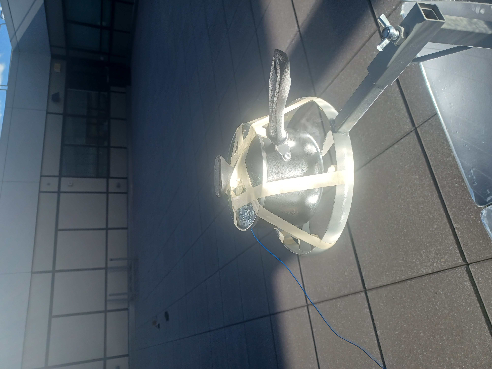
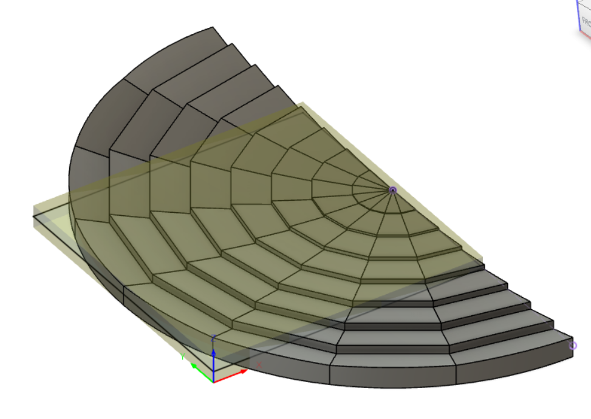
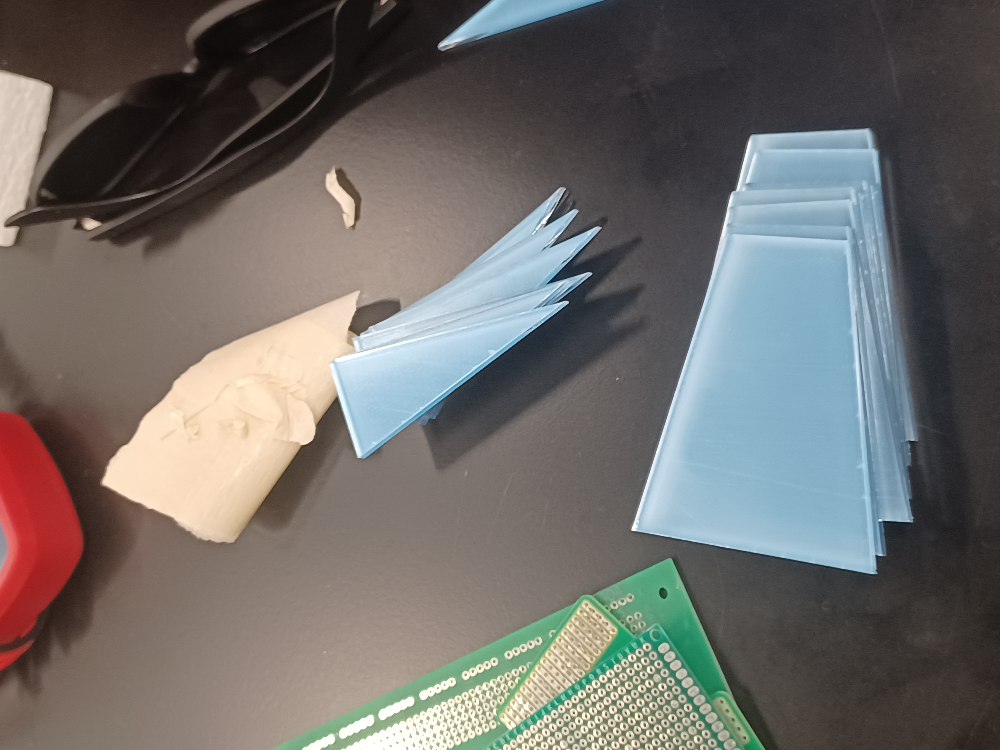
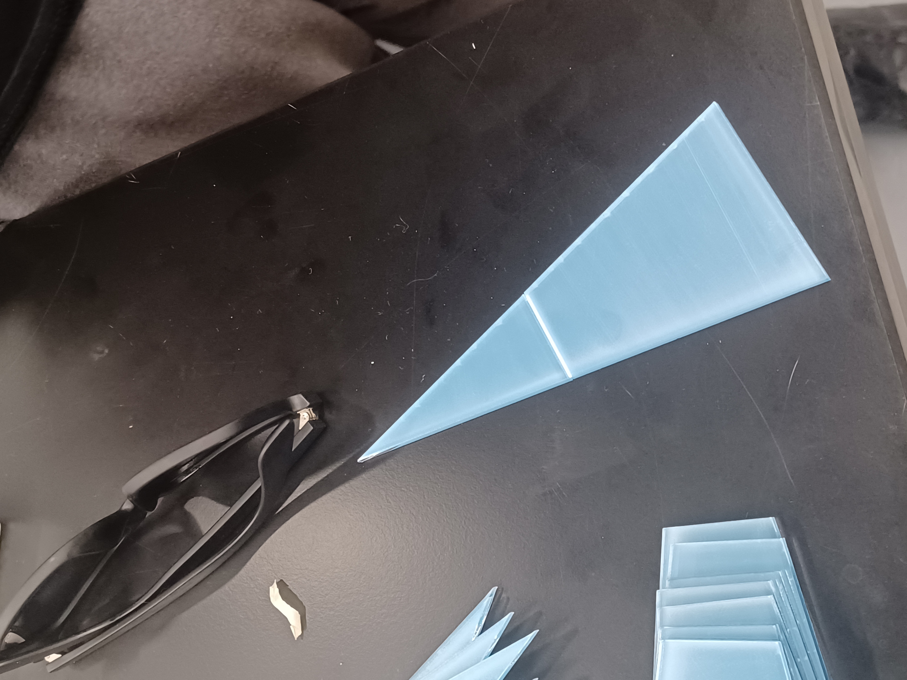
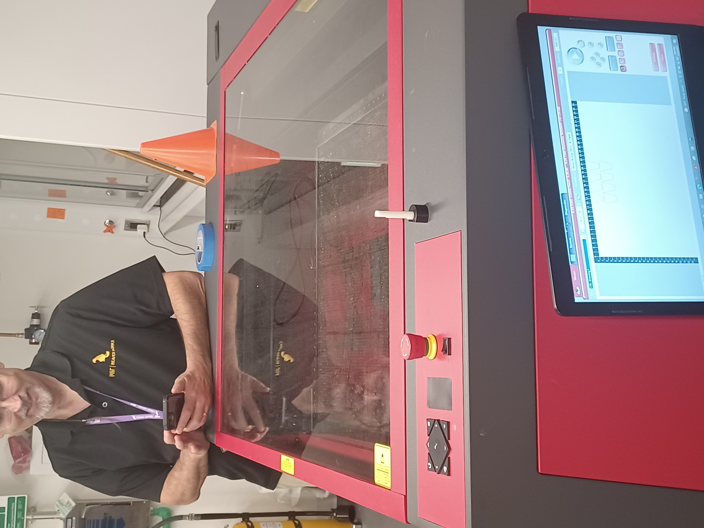

### Week 4
##### _Monday, September 26_
Ladies and gentlemen: we did it! We finally got water to boil!
We decided to retry our experiment with all three cookers. This time, we had roof access, so we didn't have to worry as much about shadows from buildings blocking the sun. This was also a very sunny day, so our hopes were high. Once we set up the temperature probes and had all cookers facing the sun, the large satellite cooker came to a boil in 15 minutes. When this happened, we had essentially achieved our initial goal and set that cooker aside so as to protect our retinas when we were walking back and forth on the roof. We still wanted to see if any of the other cookers would come to a boil, so we kept those out in the sun.
Image and video of the water boiling:

<video width = "500" controls>
<source src="./boiling_vid.mp4" type="video/mp4">
</video>
In the end, neither of the other cookers came a rolling boil like the large cooker did, but there were significant increases in temperature compared to the prior experiments.
##### _Wednesday, September 28_
We then turned our focus to the components of the Fresnel reflector and the motor system for tracking. Nathan showed us the CAD drawing of the Fresnel reflector pieces and helped us set up Fusion360 on our laptops. Afterwards, Catherine and Xavier went with Justin to make the styrofoam stand for the Fresnel reflector, Anna and Christine learned about motors with Nathan, and Noah and I learned how to use the laser cutter with Joel. After learning the basics of how to set up the machine and download the files for each piece, we had enough time to print the 2 smallest segments of the 8-segmented reflector.
Here is what the final Fresnel reflector looked like:

Here are pictures from laser cutting:



And here is a video of the milling of the foam stand:
<video controls>
<source src="./foam_vid.mp4" type="video/mp4">
</video>
[Head back to the home page](../index.html).